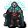

苦悶 Agony
英語版 CrawlWiki の記事「Agony」(0.31 向け、2026-05-23 版)の翻訳です。原文の著者は編集履歴をご覧ください。
この記事は 0.31 の時点の内容で、最新の 0.34 とは違うところがあるかもしれません。
| | |
|---|---|
| 詠唱の騒音 | 5 |
| 呪文の騒音 | 0 |
| 射程 | 視界(LOS) |
| フラグ | 意志力判定(Will check)、方向・対象指定(Dir or target)、モンスター専用(Monster)、射線の確認が必要(Needs tracer) |
| 対象のモンスターの体力を半分奪い去る。このダメージで直接死に至ることはない。
(著作権のある引用のため本文は省略) |
苦悶はモンスター専用の呪文で、視界内の相手ひとりに拷問を加えようとする。射線が通っている必要がある。相手が意志力判定に失敗すると、現在の HP が半分になる。通常の拷問と同じく、苦痛への耐性に加えて負のエネルギーへの耐性でも防げる(プレイヤーの場合、rN+ ひとつにつき失う HP が 5% 減る)。
苦悶を唱える敵は次のとおり。
- p

死の騎士 - 1
 イグナシオ
イグナシオ - a
 帝国の護衛兵
帝国の護衛兵 - p
 死人使い
死人使い

プレイヤーが唱えられる似た呪文に苦悶の呪いがある。苦悶の呪いを覚えているプレイヤーの幽霊は、代わりにこの呪文を使う。
苦悶の一撃
| | |
|---|---|
| 詠唱の騒音 | 5 |
| 呪文の騒音 | 0 |
| 射程 | 1 |
| フラグ | 意志力判定(Will check)、方向・対象指定(Dir or target)、モンスター専用(Monster)、射線の確認が必要(Needs tracer) |
| 隣接するモンスターの体力を半分奪い去る。このダメージで直接死に至ることはない。 |
苦悶の一撃の効果は苦悶とまったく同じだが、射程が 1 しかない。
苦悶の一撃を唱える敵は次のとおり。
- H
 沼渡りの魔女
沼渡りの魔女